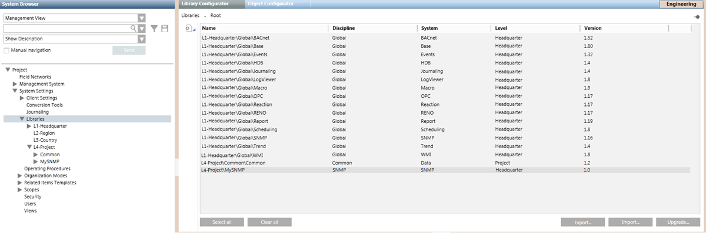
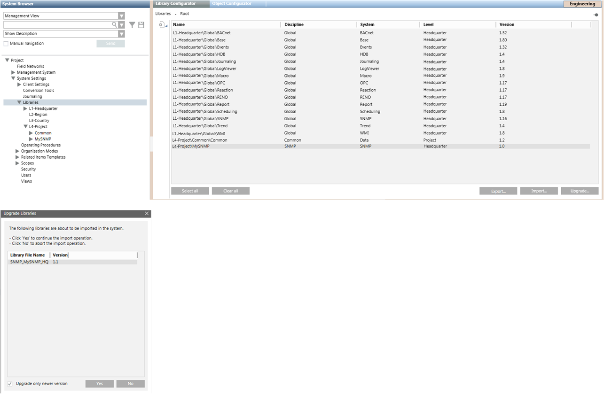

Managing the SNMP Libraries
This section provides instructions for importing, exporting or upgrading SNMP libraries.
Prerequisites
- You are trained and authorized to work with system libraries.
- System Manager is in Engineering mode.
- System Browser is in Management View.
Export an SNMP Library
You can export an SNMP library to use in other projects.
- In System Browser, select Project > System Settings > Libraries.
- The Library Configurator tab displays.
- In the list of the installed libraries, select the SNMP library to export.
- Click Export.
- In the Export Libraries dialog box, select the target directory and click Save.
- The SNMP library is exported in a GMS file (a file with extension .gms), which is saved in the chosen directory of the file system.

Import an SNMP Library
An exported SNMP library can be imported from a GMS file (a file with extension .gms) in other projects where you want to re-use any SNMP devices contained in it.
- A GMS file containing the configuration of an SNMP library is available in the file system.
- In System Browser, select Project > System Settings > Libraries.
- The Library Configurator tab displays.
- Click Import.
- In the Import Libraries dialog box, select the GMS file that corresponds to the SNMP library you want to import.
- Click Open.
- When the import is complete, the SNMP library appears under its specific library level and folder in System Browser.
Upgrade an SNMP Library
When a new library revision (only the minor version changes) is released for an SNMP device, you can upgrade the SNMP library in the existing projects.
- Export the library from the project where you have created the new revision.
- The library is exported to a GMS file (a file with extension .gms).
- Copy the GMS file (a file with extension .gms) to the Desigo CC computer where the SNMP library must be upgraded.
- In System Browser, select Project > System Settings > Libraries.
- The Library Configurator tab displays.
- Click Upgrade.
- In the Browse for Folder dialog box, select the folder containing the GMS file that corresponds with the SNMP library revision you want to upgrade.
- Click OK.
- When the Upgrade Libraries dialog box displays, click Yes to upgrade the SNMP library.
